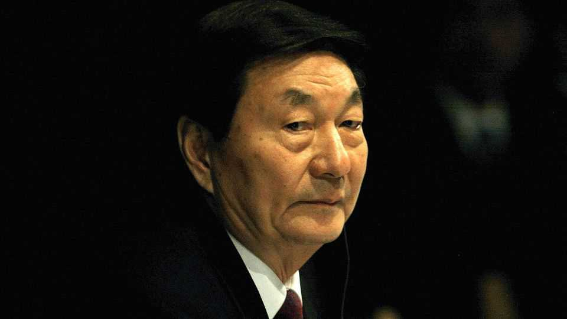

Zhu Rongji’s death is a reminder of how much has changed in China
A titan of pragmatic reform is gone, aged 97

Aug 13th 2026
Soon after becoming China’s prime minister in 1998 Zhu Rongji famously declared that he had ordered 100 coffins — 99 for corrupt officials and one for himself. In his hatred of bureaucratic graft, the pioneer of market-opening reforms shared a trait with China’s current leader, Xi Jinping. In many other ways, Mr Zhu, who died on August 12th, was the antithesis of China’s current leadership. Pragmatic, plain-speaking and intellectually curious, he eschewed ideology in his quest to integrate China with the global economy. He also wielded enormous power in a collective leadership system that Mr Xi has dismantled.
The loss of “Boss Zhu” at the age of 97 did not just mark the end of an extraordinary life. It was a reminder, too, of how much Chinese economic and political life has changed in the 14 years since Mr Xi took power. And it brought into focus unresolved questions over Mr Zhu’s legacy. As the man who brought China into the World Trade Organisation in 2001, he is credited with initiating an unprecedented period of economic growth. His efforts also threw tens of millions of state workers into unemployment, helped to create a property bubble and laid the groundwork for some of the current tensions between China and America.
Xinhua, China’s main state-run news agency, said only that Mr Zhu died of “illness”. An official obituary described him as “a time-tested and loyal communist fighter, and an outstanding proletarian revolutionist, statesman and leader”. It also said that in retirement, he had been a firm supporter of Mr Xi. But, as is customary in a country where leaders’ deaths have sparked unrest in the past, the obituary omitted many of the more controversial details of Mr Zhu’s career, including his suspensions from the Communist Party in the 1950s and 1970s and the criticism he faced from more conservative leaders in the 1990s.
Mr Zhu was nearly the last survivor of the “third generation” of Chinese leaders who were born in the 1920s and 1930s and educated, often as engineers, after the Communist Party took power in 1949. He was born in Changsha, in the south-central province of Hunan, and raised by relatively wealthy uncles following the death of his parents. A gifted student, he graduated in electrical engineering from Beijing’s Tsinghua University and landed a job at the State Planning Commission. But after being labelled a “rightist” in the 1950s he spent two decades in relative obscurity, including five years as a farm worker.
Rehabilitated after Mao Zedong’s death in 1976, his political career took off, and 12 years later he became mayor of Shanghai. There he worked alongside Jiang Zemin, who was the local party boss at the time but was promoted to China’s top leadership post in the aftermath of the military crackdown on pro-democracy protests around Tiananmen Square in 1989. Mr Zhu won plaudits for peacefully defusing similar protests in Shanghai, as well as for his drive to modernise the city’s waterfront. Two years later he too was summoned to Beijing and put in charge of economic management, first as a vice-premier and then as prime minister.
His main task was to reinvigorate the pro-market reforms that had faltered since 1989. Among his main achievements were reining in annual inflation, which had risen to a high of more than 24%, and overhauling China’s tax system to fill government coffers and to tighten control over regional administrations. He slashed red tape in order to lure foreign investors and weeded out corrupt or incompetent bureaucrats. And he trained and promoted a cohort of economic and financial experts who occupied senior posts long after he retired. He is best remembered for privatising hundreds of loss-making state-owned enterprises and spearheading reforms and negotiations that brought China into the WTO.
That made him popular with Chinese business leaders and academics who favoured pro-market reforms. But he often irked other senior leaders, and since his retirement in 2003 no other prime minister has come close to matching his reformist record. Indeed, in recent years Mr Xi has sidelined many of Mr Zhu’s protégés and reversed some of his reforms, reining in private enterprise and giving great powers to the state sector. Nor is there any prospect of Mr Xi appointing a prime minister with the powers and personality that made Mr Zhu so distinctive. In China today, there can only be one boss. ■
Subscribers can sign up to Drum Tower, our new weekly newsletter, to understand what the world makes of China—and what China makes of the world.